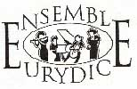

Ensemble Eurydice.
Ensemble Eurydice.
Né en France en juillet 1989 de l'association de musiciens venus de divers horizons, qui ont apporté leur expérience et leur technique instrumentale au service de la tradition, en faisant le lien entre le passé et le présent (Daniela Pisano flûte, Jacques Tys hautbois, Vincent Malgrange violoncelle et Denise Wolfcarius clavecin).
L'Ensemble Eurydice se propose de faire renaître les concerts de 'divertissement' par un répertoire comprenant la musique française galante, baroque et contemporaine (écrite expressément pour nous), sans oublier le patrimoine de musique de chambre du XVII et XVIII siècles (Bach, Vivaldi, Quantz Telemann...).
L'Ensemble Eurydice est à géométrie variable, et propose des programmes avec différents formations du duo à l'orchestre de chambre, avec chef d'orchestre et chanteurs.
L’Ensemble Eurydice organise le Festival et le Stage de musique « Eurydice » à Levico Terme (Italie).
Ensemble Eurydice :
Daniela Pisano flûte et direction artistique
Jacques Tys hautbois
Vincent Malgrange violoncelle
Denise Wolfcarius clavecin
Catherine Perlot et Marco Pedrona violon
Luca Maggioni alto
Huguette Geliot harpe
Helene Boscheron piano
Santy Masciaro’ guitare
Luca Ludovici clarinette
Walter Geromet sax
Olivier Ayault baryton
Anne Lavandier mezzo-soprano
Quelque proposition:
Duo flûte et harpe
Duo flûte et guitare
Trio flûte, baryton et piano
Le quatuor Ensemble Eurydice flûte, hautbois, violoncelle et clavecin
Les duos, trios, quatuors avec violon, alto, clarinette, sax et également avec les deux voix.